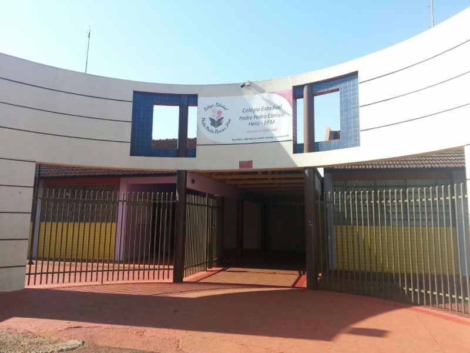

- Escola
- Estudante
O Colégio Estadual Padre Pedro Canísio Henz, fica loclizadono bairro Preidente em Cascavel Pr, ele abrange o fundamental doisa e o novo ensino médio, que segue os horários Manhã, Tarde e Noite. O colégio fornece ensino de qualidade, com professores capacitados ao trabalho. Os alunos tem direito a café da manhã no inicio das aulas e o lanche nos 15 minutos de intervalo. Todos os alunos devem estar uniformizados com a calça e a camiseta do colégio.
A turma mais estudiosa e famosa é a Segunda Série A. Nós somos super unidos e a turma favorita por todos os professores e professoras que nos ajudam!
